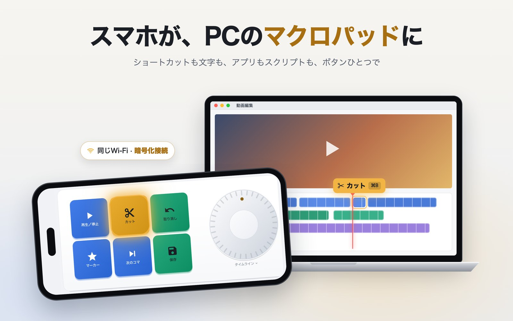
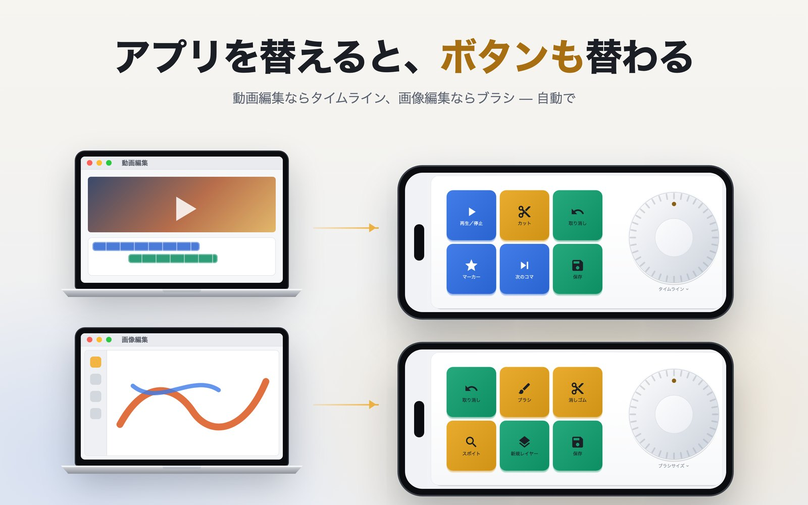
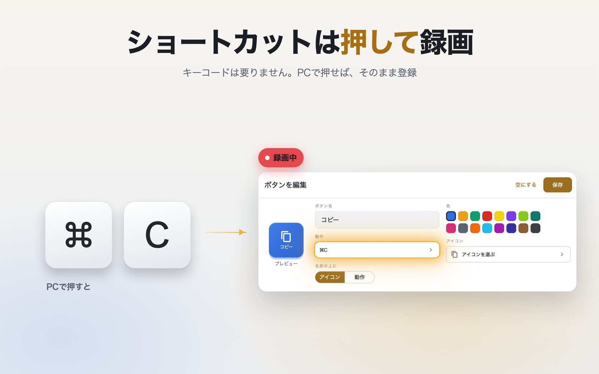
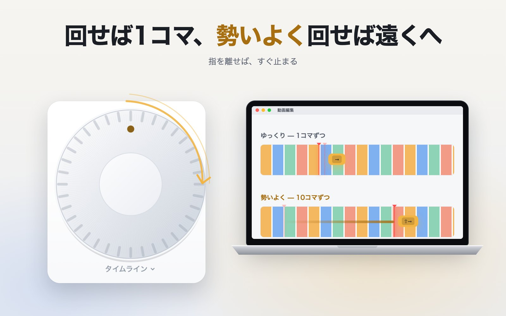
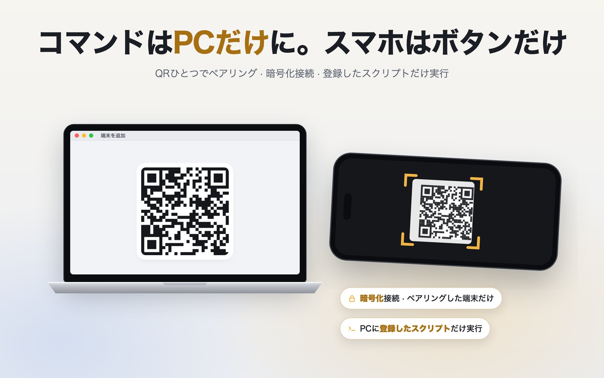

前面のアプリについていく
画面をFinal Cut、Photoshop、Safari、VS Codeに紐づけておきます。そのアプリが前面に来るとスマートフォンがその画面に切り替わり、離れると決めておいた画面に移るか、そのまま残ります。
スマートフォンのボタンとノブで、隣のPCのショートカットを押し、文字を入力し、アプリを開き、スクリプトを実行します。PCでFinal Cutを前面に出すと、スマートフォンがFinal Cut用のボタンに切り替わります。

アイデア
ハードウェアのマクロパッドは、自分で切り替えるまで同じキーのままです。VelozPadはPCで前面にあるアプリを見て、スマートフォンのボタンをそのアプリに合わせて入れ替えます。Final Cutならタイムライン、Photoshopならブラシ。マクロパッドは、いつも持ち歩いているスマートフォンです。
入っているもの
画面をFinal Cut、Photoshop、Safari、VS Codeに紐づけておきます。そのアプリが前面に来るとスマートフォンがその画面に切り替わり、離れると決めておいた画面に移るか、そのまま残ります。
タイムライン、ブラシサイズ、音量を回します。速く回すと大きく進み、指を離すと数秒も転がり続けずにすぐ止まります。
スマートフォンで録画を押し、PCでキーを押してください。キーコードも、⌘記号を探す必要もありません。
テキストの入力、アプリを開く、再生・停止、そして複数ステップのまとめ。アプリを開き、待って、ショートカットを押します。
PCにスクリプトを登録すると、スマートフォンから名前で実行できます。スマートフォンがコマンドを送ることはありません。送るのはどのボタンを押したかだけです。
ペアリングはPCの画面のQRコード1つで終わります。その後の接続は暗号化され、あなたのPCだけに固定されます。ペアリングしていない端末は入れません。



どこから来たか
始まりは1つの問いでした。スマートフォンのボタンでPCの⌘Cを押せるだろうか。最初のビルドがローカルネットワーク越しにまさにそれをやってのけたのが2026年9月です。
その後はすべて、危なくないものにするための作業でした。PCを動かすスマートフォンは、そのPCのリモコンです。だからペアリングと暗号化、そしてスクリプトはPCだけに置くという原則が、上のどの機能よりも先に入りました。
そしてこのアプリを持つ理由になる部分、前面のアプリについていく画面が加わりました。いまは同じPCを、iOSからもAndroidからも動かしています。
プライバシー
スマートフォンとPCは、あなたのネットワーク内で暗号化したまま直接やり取りします。あいだに開発者のサーバーもアカウントもありません。ボタンの構成とペアリングの情報は、あなたの端末にだけあります。アプリは無料で広告が表示されるため、Google AdMobが一般的な広告識別子と端末情報を収集しますが、あなたが押すボタンが広告に渡ることはありません。詳しくはプライバシーポリシーにすべて書いてあります。
アプリはまもなくApp StoreとGoogle Playで公開されます。あわせて必要なPC用エージェントは、このページから無料でダウンロードできるようになります。いまはmacOS用で、Windows用は準備中です。
